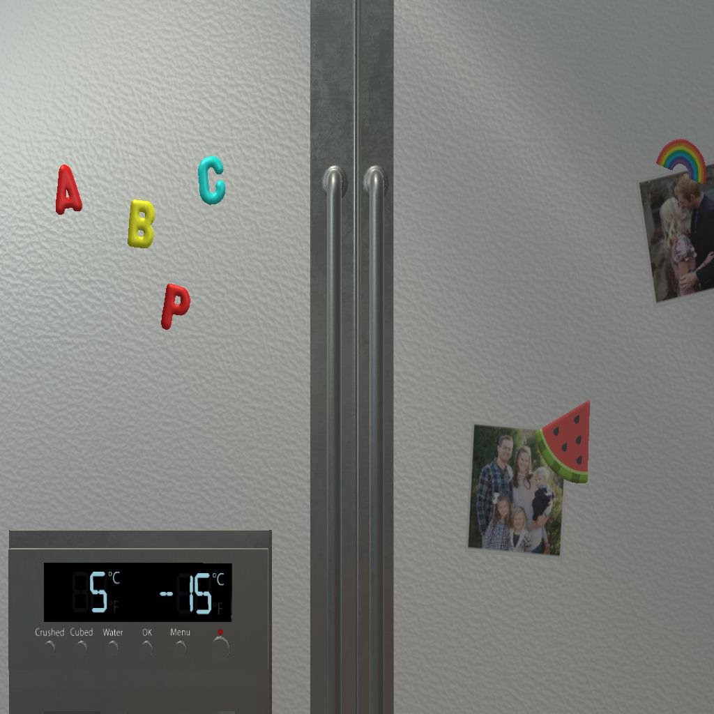

---------------------------------------------------------task: 12---------------------------------------------------------
--------------------------------------------------------------------------------------------------------------------------------------------------------------------
--------------------------------------------------------------------------------------------------------------------------------------------------------------------
Step:--------------------------------------------------------------------------6-------------------------------------------------------------------------------
----------------------------------------
VLM Prompt:
Image1:
Image2:
**Instruction**
1. Analyze the provided images to identify all visible household objects and compare the difference between images (e.h. whether the object is opened or not and taken on hand or not), focusing on those relevant to the task description "put a clean tomato in countertop."
2. Use the analysis of images and the task hint "The agent must find an object of the desired type, pick it up, go to a sink or a basin, clean the object with a sink or basin, and then find the correct location to place it and put it down there. The agent does not need to use soap bottle or faucet to clean the object, and the agent just needs to do action that is "clean the object with the sink or sink basin"." to answer the question: what is the most reasonable action in the choices for the task description "put a clean tomato in countertop"?
3. Decide and write the answer using the template: The answer is: (i): , where i is the real number. If there is no desired object in images, search every place based on **Initial Observation** to find the object. And if no one is exactly correct, choose a similar answer.
**Initial Observation**
You are in the middle of a room. Looking quickly around you, you can see cabinet (1-6), microwave (1), countertop (1-2), coffeemachine (1), toaster (1), sink (1), sinkbasin (1), fridge (1)
**Answer Choices**
(1): go to cabinet 1
(2): go to cabinet 2
(3): go to cabinet 3
(4): go to microwave 1
(5): go to cabinet 4
(6): go to cabinet 5
(7): go to cabinet 6
(8): go to countertop 1
(9): go to coffeemachine 1
(10): go to toaster 1
(11): go to countertop 2
(12): go to sink 1
(13): go to sinkbasin 1
(14): close fridge 1
(15): take apple 1 from fridge 1
(16): take potato 1 from fridge 1
(17): examine fridge 1
**Answer**
Let's think step by step by following the instructions.
----------------------------------------
----------------------------------------
Original Response:
Image Analysis:
- Image 1 shows a fridge with its freezer compartment open, revealing a temperature display, and some magnetic letters on the fridge door. There is no tomato visible in this image.
- Image 2 shows an open fridge with a dark interior. On a shelf inside the fridge, there are two items that appear to be an apple and a potato. There is no tomato visible in this image.
Comparison:
- The fridge is open in both images but displaying different compartments.
- There is no tomato visible in the hand or in any of the images provided.
Task Analysis:
To complete the task "put a clean tomato in the countertop," the agent must first find a tomato. Since there is no tomato visible in either image, the agent must search other places as per the **Initial Observation**. After finding a tomato, the agent would go to a sink or sink basin to clean the tomato and then place it on the countertop.
Based on the **Initial Observation**, there is no direct mention of a tomato, but the likely places to find one would be in the fridge or cabinets where food is commonly stored.
The answer is: (17): examine fridge 1
This action is the most reasonable because it involves checking the contents of the fridge, which is a common storage place for tomatoes. If the tomato is inside the fridge, this action will allow the agent to find it.
----------------------------------------
----------------------------------------
>>> Refine Original VLM Response and Get Pure Action: examine fridge 1
This action is the most reasonable because it involves checking the contents of the fridge, which is a common storage place for tomatoes
----------------------------------------
-----------------------------------------------------------------
Running time: 11.31227159500122 seconds
Total Money: 5.407080000000002
-----------------------------------------------------------------
-----------------------------------------------------------------
Text Observation:Nothing happens.
-----------------------------------------------------------------
UNSUCCEED